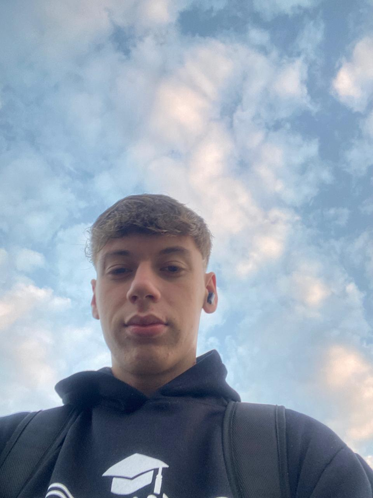
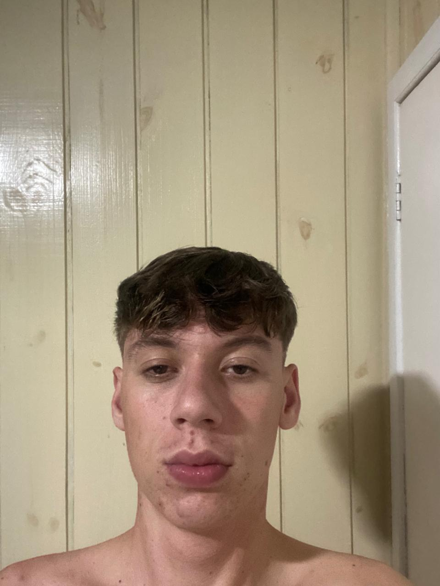
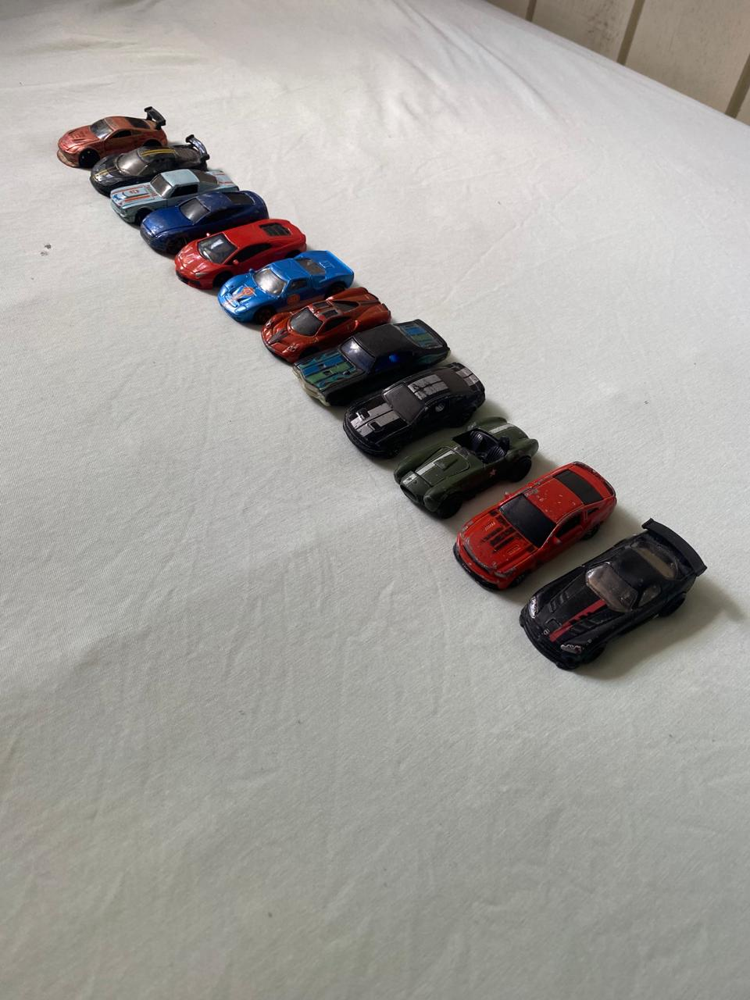
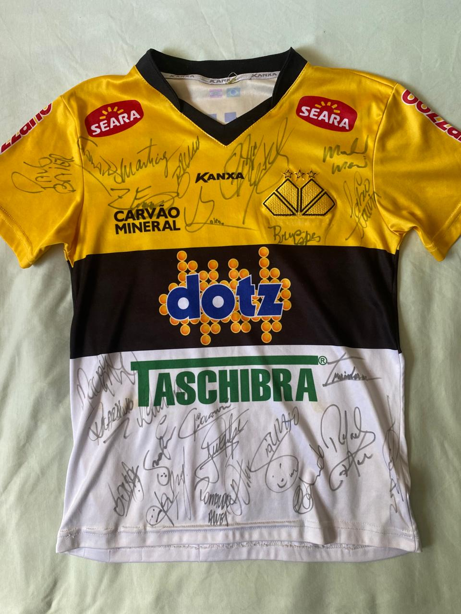

Fotos




(Carrinhos que mais gosto)
(Camisa que mais tenho sentimento)
Dados Pessoais
| Idade/Nascimento | 17 anos/01-01-2007 |
|---|---|
| Endereço | Içara, Santa Catarina |
| luccacunhaski@gmail.com |
Curiosidades
Bom eu sou Lucas, gosto muito de praticar esportes(pra dar uma saída de casa), como Basquete, Futebol, Vôlei até mesmo correr ou andar de bicicleta. Ouço bastante música também, desde de música de reflexão até musica para me divertir.
Já quase perdi um olho brincando de pega-pega quando era mais novo, pois tropecei e furei minha testa(mais perto da sobrancelha) onde fiz meus primeiros 3 pontos, foi horrível. Sou uma pessoa paciente, companheiro e tranquilo.
A coisa que eu mais gosto são carros, sou apaixonado por carros, tenho um monte de hotwheels.